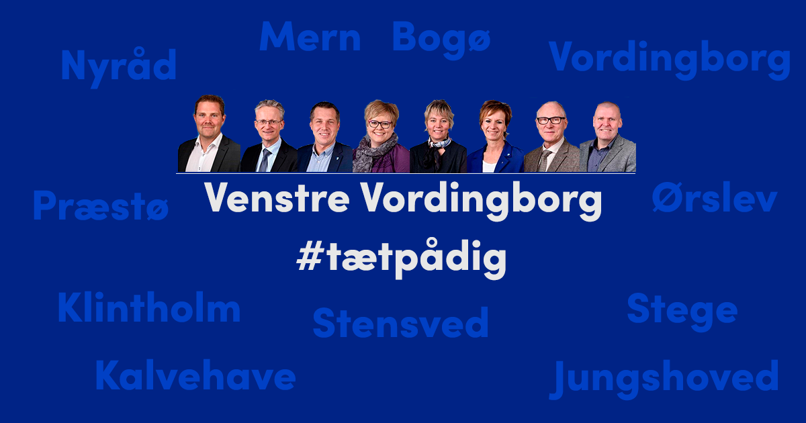
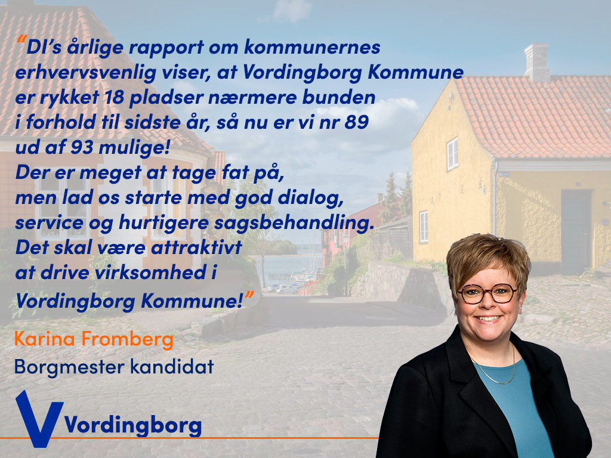

VENSTRE
For Venstre i Vordingborg Kommune har jeg hjulpet med billeder og video til deres sociale medier.
DIVERSE OPSLAG PÅ SOCIALE MEDIER
Billede til budget forhandlinger


Nyt coverbillede
Billede omkring Erhvervsvenligheden i Kommunen


Aner det ikke